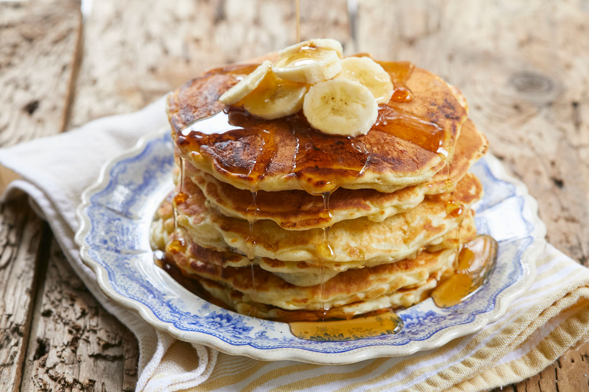

Banana Pancakes

Description:
These yummy pancakes are a snap to make.
Ingrediants list:
- 1 cup all-purpose flour
- .666 cup whole wheat flour
- ¼ teaspoon salt
- 2 ½ teaspoons baking powder
- 2 tablespoons white sugar
- 1 ½ cups buttermilk
- 2 small ripe bananas, finely chopped
- In a large bowl, mix all-purpose flour, whole wheat flour, salt, baking powder and sugar. Stir in buttermilk and bananas just until moistened.
- Heat a lightly oiled griddle or frying pan over medium high heat. Pour or scoop the batter onto the griddle, using approximately 1/4 cup for each pancake. Brown on both sides and serve hot.